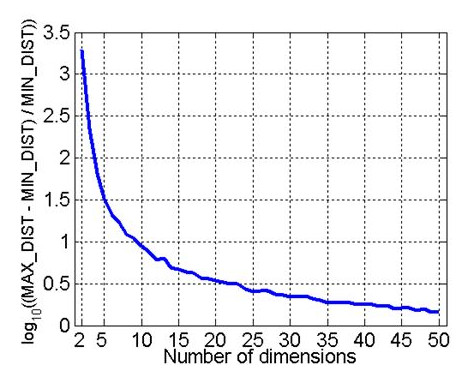
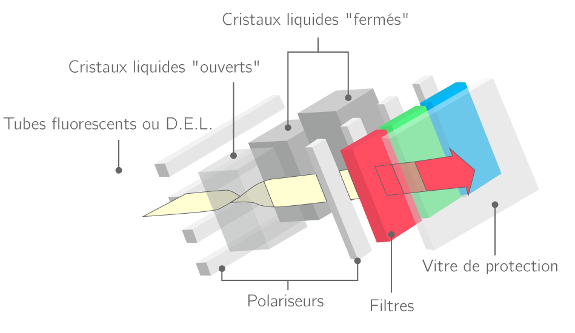

Nicosie : 111 km² Reykyavik : Superficie 274 km² Vienne : Superficie 415 km² Bratislava
: Superficie 368 km²
Fléau de la dimension
"Curse of dimensionality." Adaptive control processes: a guided tour. Princeton,
NJ (1961).
Bellman, R.

Introduction to data mining. 1st. (2005).
Tan, Pang-Ning, Michael Steinbach, and Vipin Kumar.
Pour chaque nombre de dimensions :
500 points générés aléatoirement
Calcul de : $log_{10} \left( \frac{distance_{max}-distance_{min}}{distance_{min}} \right)$
En dimension 2 :
$distance_{max}\approx$ 2500 $distance_{min}$
En dimension 50 :
$distance_{max}\approx$ 3 $distance_{min}$
Pour comprendre cette courbe vous pouvez imaginez la carte de France. Si vous tirez au hasard 500 villes, il y aura deux villes qui seront plus proches entre-elles que les autres, et deux villes qui seront plus éloignés. Oui ? Cela permet de définir la
distance minimale et maximale qu'il existe entre deux villes. Et bien ce que vous dit cette courbe c'est que la distance max est 2500 fois plus grande que la distance min. Maintenant, qu'est-ce qui peut différencer deux villes ? (superficie, PIB,
taille moytenne) Et vous cherchez à définir les villes qui sont plus a "Donc plus le nombre de dimension augmente, moins la distance entre les objets devient significative et donc plus il devient difficile de différencier des vecteurs."
objectif de cette slide : dire la phrase "C'est à cause du fléau de la dimension que nous ne pouvons pas utiliser directement l'image RGB comme espace de représentation pour faire de la classification. En effet, on pouvait voir qu'en dimension "
new slide

Fonctionnement d'un écran LCD : Un écran LCD est divisé en petites unités lumineuses appelées pixels. Chaque pixel est subdivisé en trois rectangles (appelés sous-pixels) recouverts par des filtres colorés (rouge, vert ou bleu). Un tube fluorescent
(ou un panneau de D.E.L.) se trouvant derrière l'écran produit de la lumière blanche. Pour chaque sous-pixel, une couche de cristaux liquides est située entre deux polariseurs. L'ensemble laisse passer plus ou moins de lumière suivant la tension électrique
appliquée. Les pixels étant déjà très petits, l'œil ne distingue pas les sous-pixels.